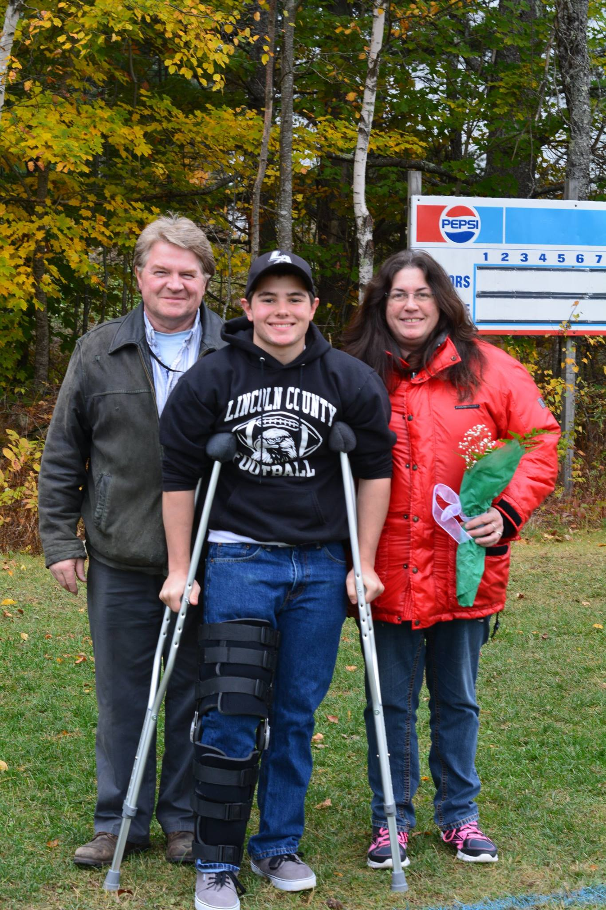
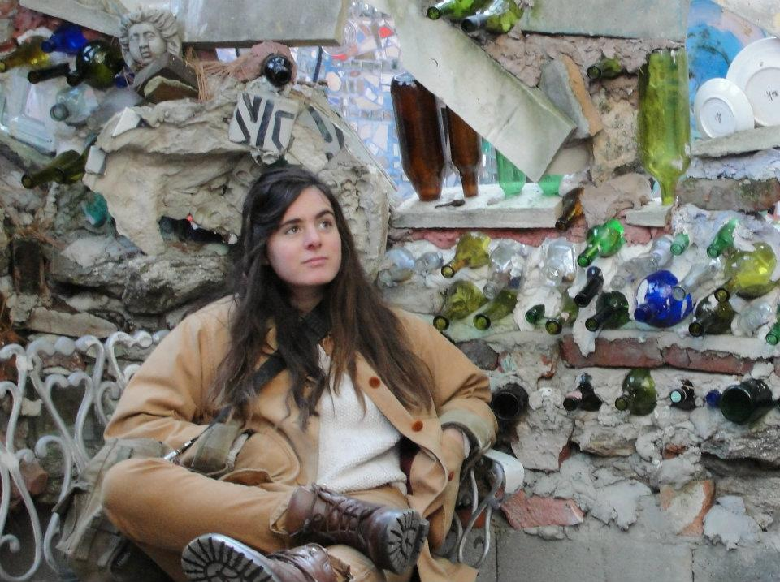
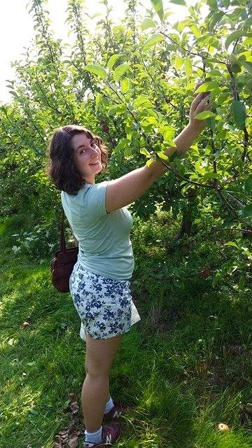
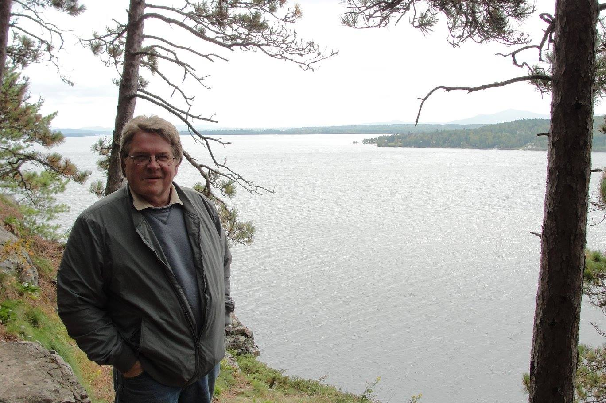
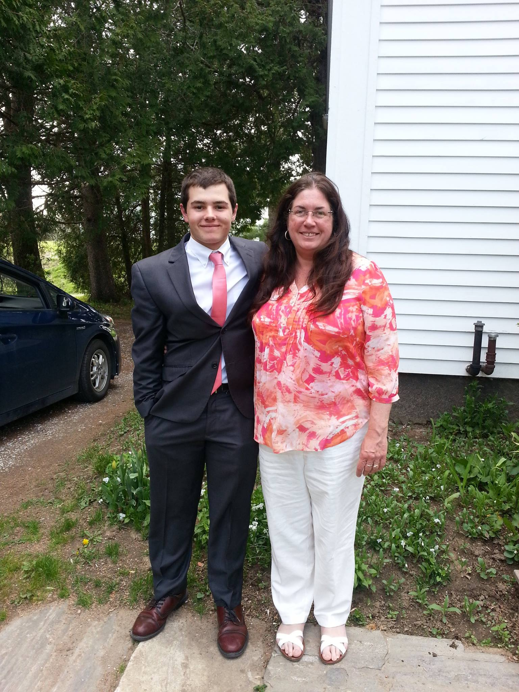

My family is comprised of five members:


Rachel is thirty years old and currently attends the University of Maine, and is studying horticulture. She is a very talented artist as well, and hopes to illustrate for plant catalogs someday. Her interests are drawing, painting, hiking, and cooking.

Yvette is twenty-three years old and recently graduated with a B.S. in Marketing from the University of Maine. She now works for a marketing firm in Brunswick, ME. She has spent time in France, London, and Japan as a student, and is well-versed in foreign languages. Her interests are claymation, traveling, and sight-seeing.

My dad is fifty-seven years old and also graduated from the University of Maine. Following school, he served for seven years in the United States Air Force, where he traveled all over the world as a Munitions Officer. His work with not only aircraft weaponry but nuclear weaponry earned him the rank of Captain. He is currently a postmaster for the United States Postal Service in Damariscotta, Maine. His interests are archaeology, learning about current events, watching the Patriots, and taking care of the lawn.

My mom is fifty-three years old and graduated from the University of Maine at Augusta. Before her career as a Lab Technician at St. Andrew's Hospital in Boothbay, Maine, she was a part-time sign painter, and a bank teller. Her interests are art, biology, gardening, cooking, and antiquing.